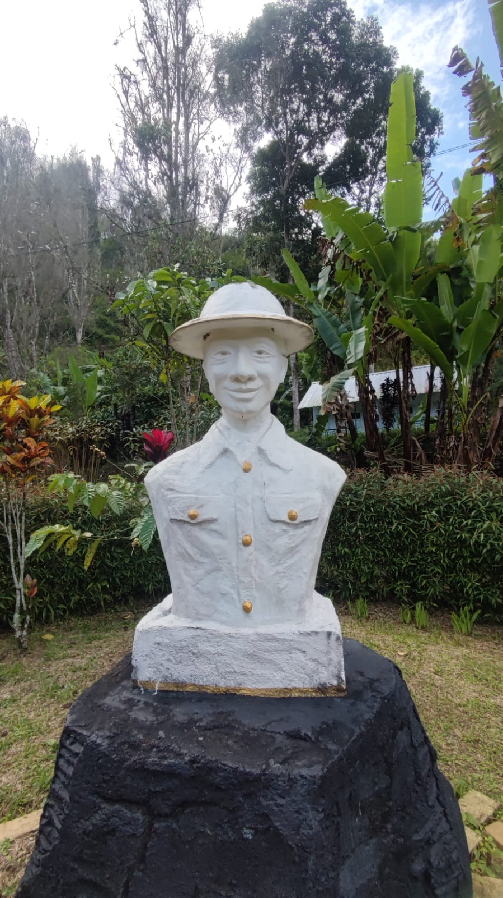

Dilem Wilis, sebuah lokasi bersejarah yang kaya akan warisan kolonial, merupakan perkebunan dan tempat pengolahan kopi yang telah ada sejak zaman penjajahan koonial (1929). Berlokasi di lereng Gunung Wilis, di Desa Dompyong, Kecamatan Bendungan, tempat ini berada pada ketinggian sekitar 800 meter di atas permukaan laut, menawarkan iklim yang ideal untuk budidaya kopi.
Nama "Dilem Wilis" sendiri memiliki arti historis yang menarik. "Dilem" diambil dari nama Meneer Van Dilem, seorang warga Belanda yang menjadi pemilik perusahaan Roos Tangler & Co. Sementara "Wilis" merujuk pada nama lokasi perkebunan yang terletak di sekitar Gunung Wilis. Kombinasi nama ini mencerminkan perpaduan antara pengaruh kolonial Belanda dan kearifan lokal Indonesia.
Meski telah berlalu hampir satu abad sejak pendiriannya, Dilem Wilis masih menyimpan banyak peninggalan bersejarah. Di antaranya adalah bangunan pabrik dan mesin-mesin pengolah kopi dari era kolonial. Walaupun sebagian besar mesin ini tidak lagi dapat berfungsi, keberadaannya menjadi saksi bisu dari teknologi pengolahan kopi di masa lalu. Selain itu, masih berdiri kokoh beberapa bangunan bergaya Belanda, perkebunan kopi yang merupakan inti dari kompleks ini masih tetap produktif, meskipun sebagian lahan telah dialihfungsikan untuk budidaya tanaman lain seperti cengkeh dan durian.
Dilem Wilis merupakan salah satu bukti nyata dari implementasi kebijakan sistem tanam paksa atau cultuurstelsel yang digagas pada tahun 1830 oleh Johannes Van Den Bosch, Gubernur Jenderal Hindia Belanda periode 1830-1833. Sistem ini, yang diterapkan di seluruh Pulau Jawa, mengharuskan petani lokal untuk mengalokasikan 20% dari lahan mereka untuk ditanami tanaman komersial seperti cokelat, teh, dan kopi. Hasil panen dari lahan tersebut harus diserahkan kepada pemerintah kolonial Belanda sebagai pengganti kewajiban membayar pajak. Di Trenggalek, selain Dompyong di Kecamatan Bendungan, daerah lain yang juga terkena dampak kebijakan ini adalah Gayam di Kecamatan Panggul.
Seiring berjalannya waktu dan perubahan zaman, Dilem Wilis telah bertransformasi dari sekadar pabrik kopi peninggalan sistem tanam paksa menjadi sebuah destinasi agrowisata yang menarik. Kini, tempat ini menawarkan pengalaman yang memadukan nilai-nilai sejarah dengan keindahan alam dan fasilitas modern. Pengunjung dapat menikmati berbagai atraksi menarik, termasuk cafetaria bergaya Belanda yang mengingatkan pada era kolonial, area perkebunan yang luas dan asri, fasilitas perkemahan untuk para pecinta alam, serta peternakan sapi perah yang memberikan wawasan tentang industri susu lokal.
Berikut adalah lokasi dari situs Dilem Wilis